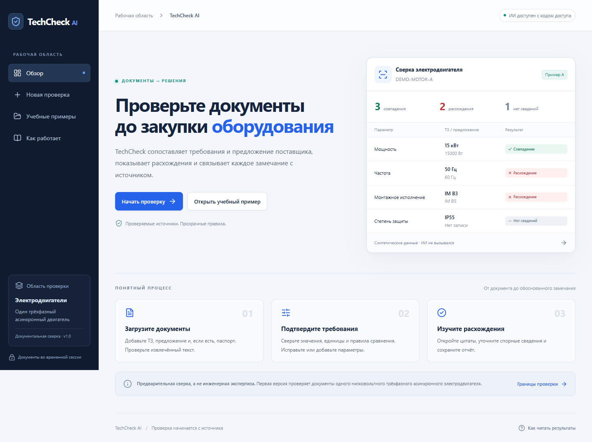
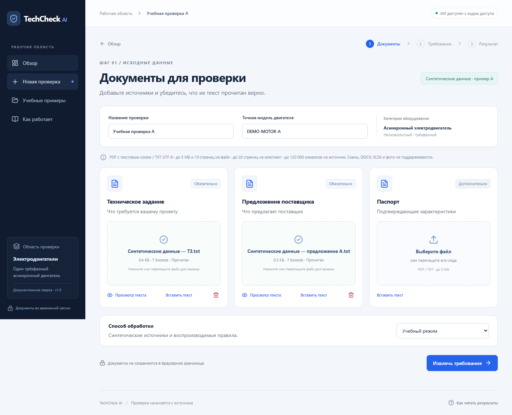
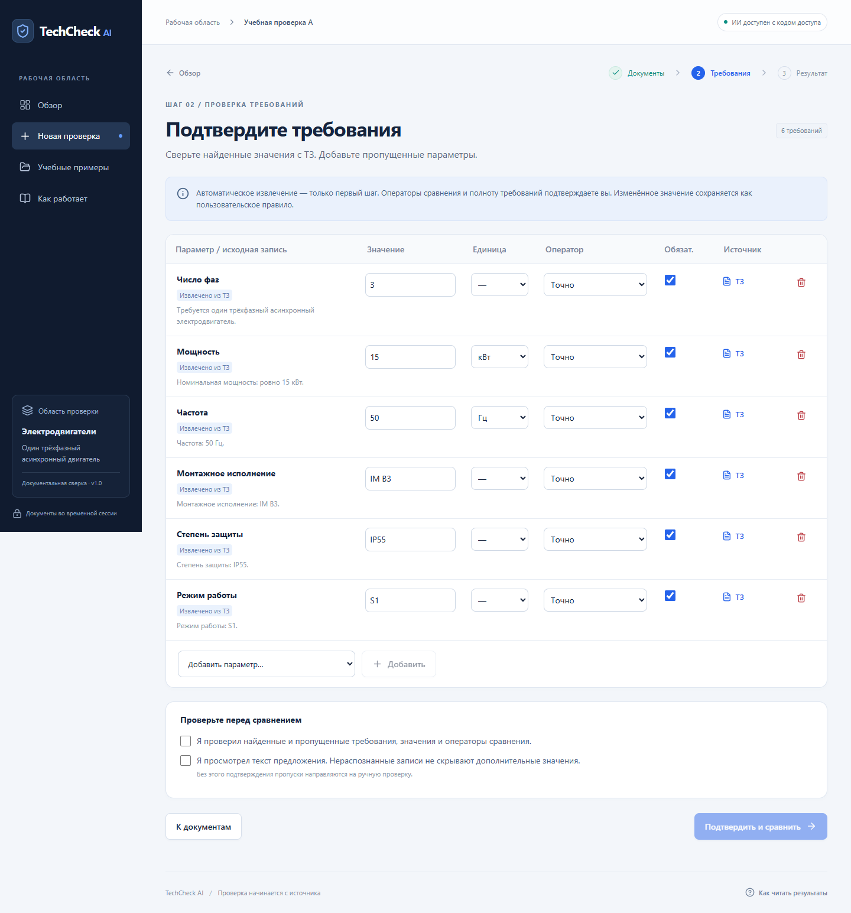
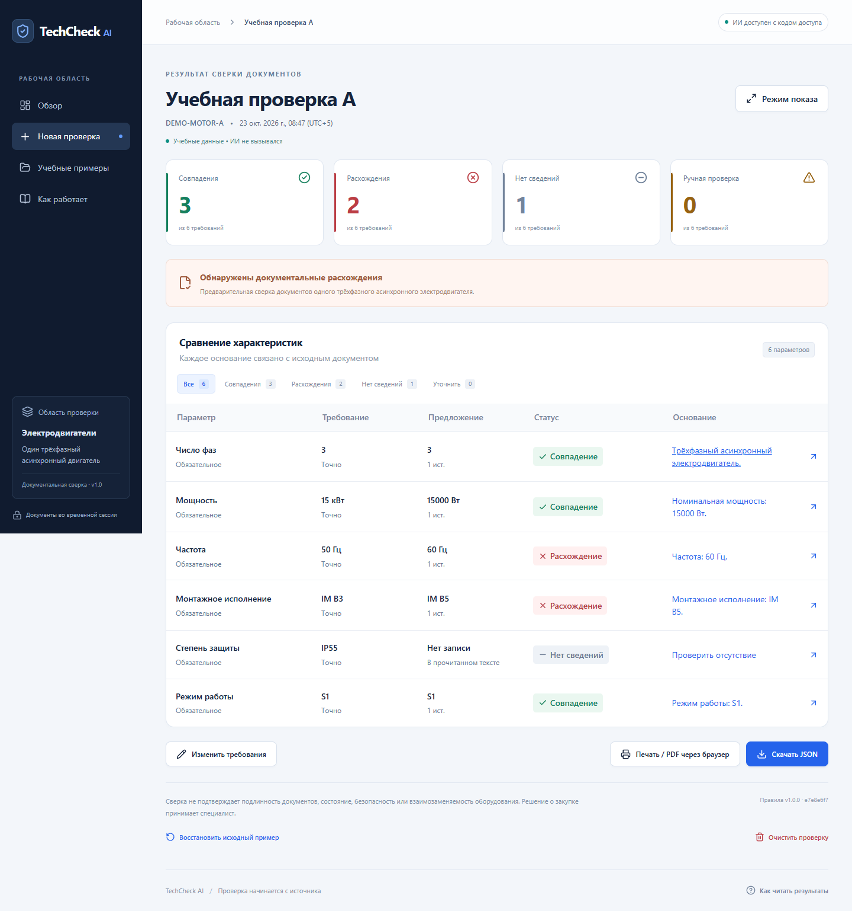
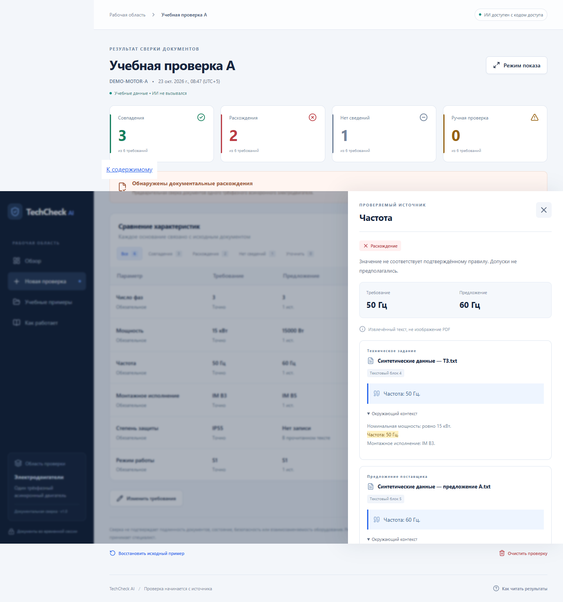

TechCheck AI: сақтық көрсетілім
Бұл — тексеру кезінде алдын ала сақталған экрандар. Мұнда жаңа есеп орындалмайды. Файл интернетсіз және жергілікті серверсіз ашылады.
Қазақша қорғау мәтіні · Сақталған PDF-есеп
Экрандарда А мысалының бастапқы 3 / 2 / 1 нәтижесі көрсетілген. PDF-есепте жиілік талабы 60 Гц болып өзгертілгеннен кейінгі 4 / 1 / 1 нәтижесі сақталған.1. Қосымшаның басты беті

2. Оқу мысалының бастапқы құжаттары

3. Талаптарды тексеру және растау

4. А мысалы: 3 сәйкестік, 2 сәйкессіздік, 1 жетіспейтін мәлімет

5. Жиілік бойынша бастапқы үзінділер
